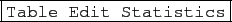
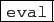
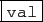
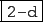
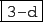
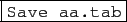

suivant: Comment avoir un tableur
monter: Le tableur
précédent: Le tableur
Table des matières
Index
Le niveau tableur est obtenu avec le raccourci Alt+t et contient :
- en haut la barre de menu de ce niveau :
 et
à coté de cette barre de menus les boutons :



 et
une ligne vide qui deviendra après une sauvegarde du tableur (faite par
exemple sous le nom aa.tab) un bouton
 (sauvegarde que l'on fait la première fois avec le
menu Table
Sauver tableur au format texte).
- en dessous, le tableur avec une case sélection, une ligne de commandes,
une ligne d'état et les cellules,
- en dessous du tableur, l'écran de représentation graphique du tableur.
Remarque On peut utiliser la barre de menu du tableur mais pour cela il
faut déplacer la souris sur un des menus. On peut aussi obtenir la barre de
menu du tableur, plus directement, en utilisant le bouton droit de la souris :
en effet, lorsqu'on clique sur le bouton droit de la souris n'importe où dans
le tableur, on fait apparaitre les menus du tableur ce qui évite un déplacement de la souris.
Le tableur de Xcas utilise les conventions habituelles des tableurs :
- Nom de cellule.
Le tableur est une matrice dont on numérote les lignes par des nombres
et les colonnes par une ou plusieurs lettres.
Le nom d'une cellule est composé d'abord
de la (des) lettre(s) (donc du numéro de colonne) puis du nombre.
Par exemple ligne 2, colonne 3 se note C2.
Les numéros de lignes commencent à 0 en mode Xcas, 1 sinon.
- Valeur et formule de calcul.
La valeur d'une cellule peut être une constante ou être calculée par une
formule pouvant faire
intervenir les autres cellules, qui sont alors désignées par une
référence (cf. ci-dessous). Lorsqu'on modifie une cellule,
on entre soit une valeur constante, soit une formule de calcul
commencant par =.
- Référence relative et absolue.
Lorsqu'on désigne une cellule depuis une formule, on peut la désigner
relativement à la cellule que l'on définit, ou
de manière absolue. Cela affecte les copies de la formule dans d'autres
cellules, les références absolues copiées correspondront au même
numéro de ligne ou colonne, alors que les références relatives correspondent
au même décalage de lignes ou colonnes. Une référence absolue se note
en précédant la (les) lettre(s) ou/et le nombre de la cellule par le signe $.
- Plage de cellules.
Cela permet de faire référence à un ensemble rectangulaire de cellules,
par exemple pour en calculer la moyenne. On indique les noms
des cellules des sommets en haut à gauche et en bas à droite du rectangle
séparés par le signe : (par exemple mean(A0:B5)).
suivant: Comment avoir un tableur
monter: Le tableur
précédent: Le tableur
Table des matières
Index
Documentation de giac écrite par Renée De Graeve